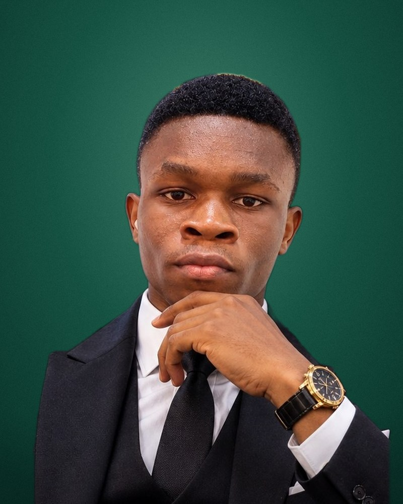

Welcome to my portfolio
Prince Caleb Effiom
I'm a software engineering student at MIVA Open University and the University of Calabar. I design and build web and mobile apps, and I'm working towards a career at the top of software engineering.

- Name
- Prince Caleb Effiom
- Programme
- B.Sc. Software Engineering
- Matric no.
- 2024/B/SENG/0920
- Studying
- Software Engineering
- Universities
- MIVA & University of Calabar
- Based in
- Calabar, Cross River
- Building
- Web & mobile apps
A little about me
I like turning a real problem into software people can actually use, from the first sketch to the version running on a phone.
I study Electronics and Computer Technology at the University of Calabar and Software Engineering at MIVA, so I get to learn both how computers work and how to build good software for them. Outside class I've built many projects and programs, mostly through my company, Belac Multiconcept Ltd, from study tools for students to systems for businesses. That's where I put what I learn into practice.
My plan is to finish my B.Sc., go on to an M.Sc., and keep growing until I'm among the best in my field.
-
Currently studyingWeb technologies, problem solving and programming in C
-
Currently buildingWeb and mobile apps for students and businesses
-
Long-term goalA B.Sc., then an M.Sc., and a career at the top of software engineering